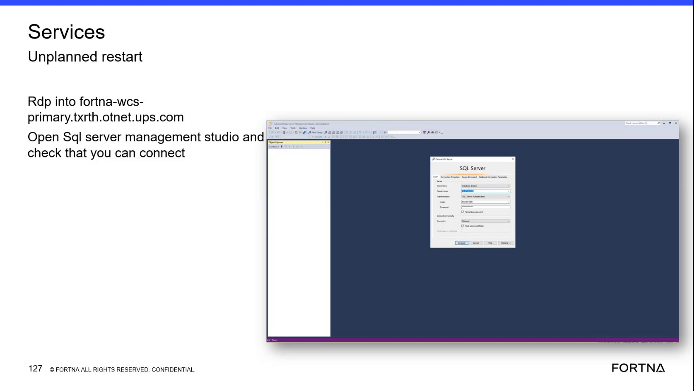

| Procedure ID | proc_verify_ssms_connectivity_after_unplanned_restart_fortna_wcs_primary_v1 |
|---|---|
| Title | Verify SQL Server Management Studio connectivity after an unplanned restart on the FORTNA WCS primary host |
| Procedure Type | diagnostic |
| Primary Role | L2_support |
| Support Safe | Yes |
| Capability Tags | wcs_service_health |
| Access Surface | wcs_sql |
| Audience Roles | L2_support |
| Failure Pattern Tags | api_unresponsive |
| Validation Status | needs_sme_review |
| Merge Status | source_finalized |
After an unplanned restart on the FORTNA WCS primary host, use RDP to open SQL Server Management Studio (SSMS) and confirm that you can successfully connect to the SQL Server on the host named fortna-wcs-primary.txrth.otnet.ups.com.
Use this as a basic validation step after an unplanned restart on the FORTNA WCS primary host to confirm SSMS connectivity before deeper service/DB connectivity troubleshooting.

Responsible role: L2_support
Instruction:
Use RDP to connect to the host named fortna-wcs-primary.txrth.otnet.ups.com.
Expected result:
You are connected to the host fortna-wcs-primary.txrth.otnet.ups.com and can launch applications on it.
Stop or Escalate If:
Responsible role: L2_support
Instruction:
On the connected host, open SQL Server Management Studio (SSMS).
Expected result:
SSMS launches successfully and is ready for a connection attempt.
Stop or Escalate If:
Responsible role: L2_support
Instruction:
In SSMS, perform the connectivity check by verifying that you can connect (the connection attempt succeeds rather than failing).
Expected result:
The SSMS connection attempt succeeds (i.e., you are able to establish a connection rather than receiving a connection failure).
Stop or Escalate If:
Responsible role: L2_support
Instruction:
If SSMS cannot connect, stop and escalate for further service/DB connectivity troubleshooting; do not proceed with dependent checks.
Expected result:
A failure outcome is recognized and escalation is initiated rather than continuing with downstream validation steps.
Stop or Escalate If: